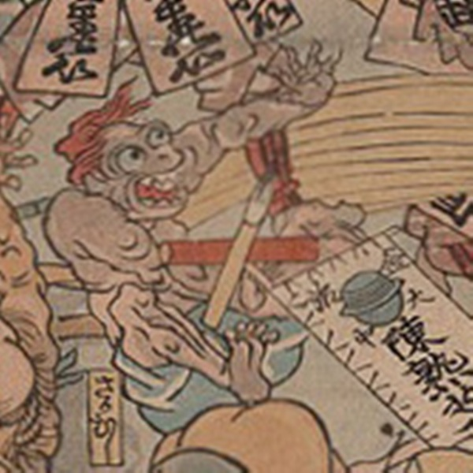

病気；ビョウキ，疫神；エキシン，逆虫；サカムシ

さかむしが擬人化した化物。薬の化物の軍勢に圧され尻餅をついている。腰巻のみを着けて、髪は赤く大きく開いた口には鋭い歯が並んでいる。
著作者：歌川芳虎／出典：親書誌：U426_nichibunken_0012：諸病諸薬の戦い；ショビョウショヤクノタタカイ／日付：2006／資源識別子：U426_nichibunken_0012_0009_0000
Copyright (c)2010- International Research Center for Japanese Studies, Kyoto, Japan. All rights reserved.